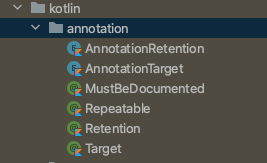
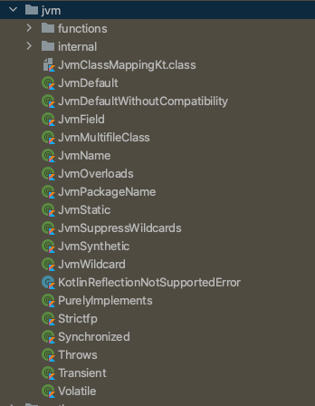

Kotlin 学习笔记（8）-- 注解
I.注解的基本概念
- 注解是对程序的附加信息说明
- 注解可以对类、函数、函数参数、属性等做标注
- 注解的信息可用于源码级、编译期、运行时
- 源码期：生成文档时，给开发者看的
- 编译期：给编译器看的，仅保留到编译期，运行时获取不到
- 运行时：一直保留到运行时段，用于反射
II.定义注解类
1 | // 限定时期作用到运行时 |
1 | public enum class AnnotationRetention { |
SOURCE < BINARY < RUNTIME (可作用范围，RUNTIME会一直保留到代码运行)
注解输入的参数仅支持以下类型及其数组：基本类型， KClass，枚举，其他注解
要求是那些在编译期就能确定值的类型
III. 使用
1 | // 输入注解所需参数 |
@JvmName：指定 类/方法 在JVM中的名字, 让编译生成的类名 可以与 代码中的名字 不同1
("Hello") //指定注解的标注对象为file
IV. 注解 vs 注释
Annotations: 参与编译的特定语法现象
Comments: 仅存在于源码中，提升可读性
V.常见内置注解
1. 用于标注注解的注解
import path: kotlin.annotation.*

2. 标准库的通用注解
import path: kotlin.*
- Metadata：kotlin反射的信息通过该注解附带在元素上
- UnsafeVariance：泛型用来破除型变限制
- Suppress：用来去除编译器警告，警告类型作为参数传入
还有很多注解，可以去看documentation
3. java虚拟机相关注解
kotlin.jvm.* 用于与java虚拟机交互的注解

很重要，尤其现在很多项目都是 Kotlin 与 Java 一起使用，这些Jvm注解可以帮助我们在两种语言中达成一样的效果，进而避免一些可能引起的问题。
- JvmField：生成java中的 field（kotlin中的属性可能到java中会生成为private，添加JvmField就是public了）
- JvmName：给方法、文件、类等指定在jvm中的名字
- JvmOverloads：函数默认参数生成函数重载。指定默认参数的方法，在java看来是一个overload的函数
- JvmMultifileClass: 该jvm类有多个文件，会生成多个该名字的类，编译后其实都在一个文件上
- JvmStatic：把方法编译成静态，生成静态成员
- Synchronized：标记函数为同步函数
- Throws：标记函数抛出的异常类型。kotlin没有受检异常，加在方法上的@Throws(IOException::class) 和java中 xxFunction throws IOException 一样
- Volatile：生成volatile的 Field
- Transient：配合序列化，标记属性不被序列化
这些都是常用的jvm注解，其他也可以到documentation中查看